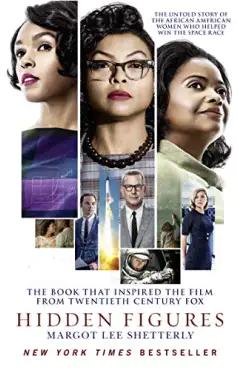
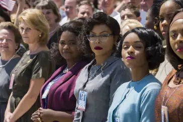
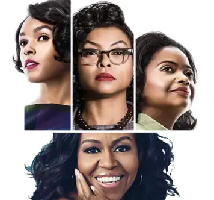

The movie Hidden Figures by Theodore Melfi analyses feminism with subtlety. We observe 3 women confronted with racism and sexism of the 60’s society.
Synopsis
Indeed, the movie, from a real story, is a cinema-adaptation of the book Hidden Figures by Margot Lee Shetterly. It immerse ourselves in the beginning of the 60’, when NASA tried to send her first man in space. So we follow 3 women, Katherine Goble, calculator, Mary Jackson, engineer in theory but who don't really have the title and Dorothy Vaughan who has the team leader role of color calculator’s team without having really the job. They are all employees of NASA.

Hidden Figures film poster
Feminist Heroins
We assist the treks of 3 women. They will cope with a lot of obstacles like racism and sexism to access their dreams. Thus the trajectories-department of NASA will integrate Katherine to check the calculations.
She will have difficulties integrating herself in the team. Indeed, women are missing and men have a reduced vision about women.
She will cope with many sexist criticisms like “ How can a woman have been hired by NASA, which is a prestigious firm ?” ; or “How can we assign a work so important, which is check calculations used to send a man in space, to a woman.”. As if a woman couldn't have excellent competences and occupy prestigious jobs.
Mary, as for her, wants to be an engineer. However, to have this job, she has to have a specific diploma, only accessible in Virginie. We find them in this segregationist state, only in universities which don’t allow women. So she will begin a trial to have access to the class. Mary will win the trial as he will participate in the evening-class.

Hidden figures movie’s picture
However, the reality catches her because as soon as her arrival in class, the teacher is surprised, seems embarrassed and says to her that “the lessons are not expected to be taught to women.”
Dorothy will fight herself to get the job of team leader. She occupies it in reality without having the qualification. She will have many difficulties to access. Not only as a woman, but particularly as black woman.
Michelle Obama and Hidden figures.
This movie can remind us of the story of Michelle Obama. Indeed, like these women, she must have fought to attain her objectives and dreams. Like them, she clinged to what she would, she didn't let herself be discouraged despite what people thought about her.

Hidden figures characters and Michelle Obama
She has fought society’s stereotypes and has refused to accept that her status of women and black women are a brake on our conservative society which has difficulty accepting evolution and changing.
Hidden Figures remind us that these racist and sexist thinkings have begun to evolve for a little time, and that eithen if we have made big progress, these values are part of our society recently. We still have a way to make it.